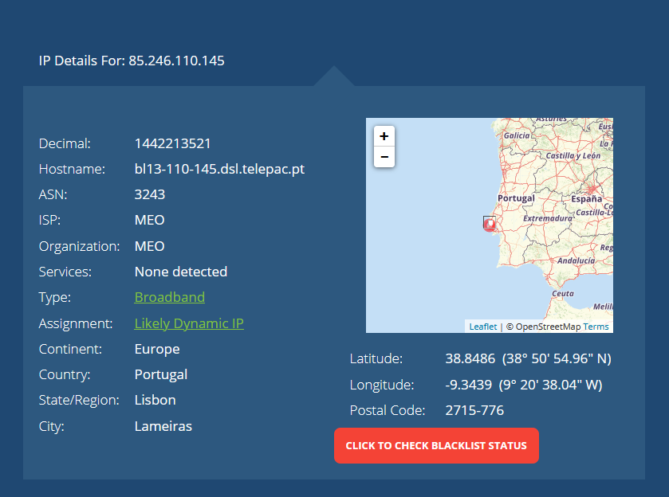
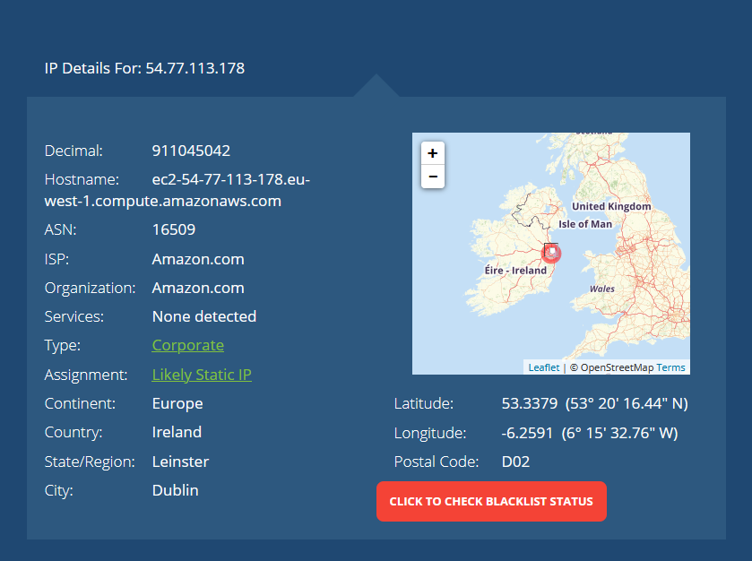
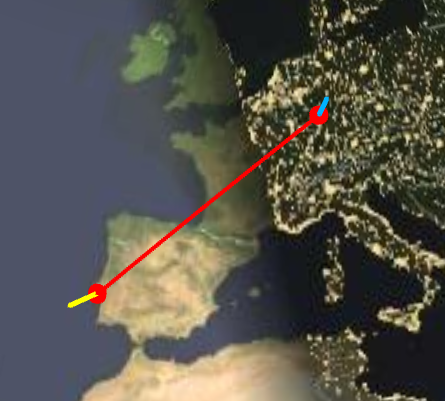
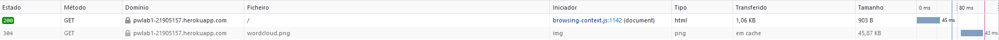
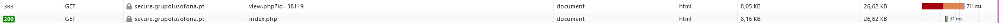
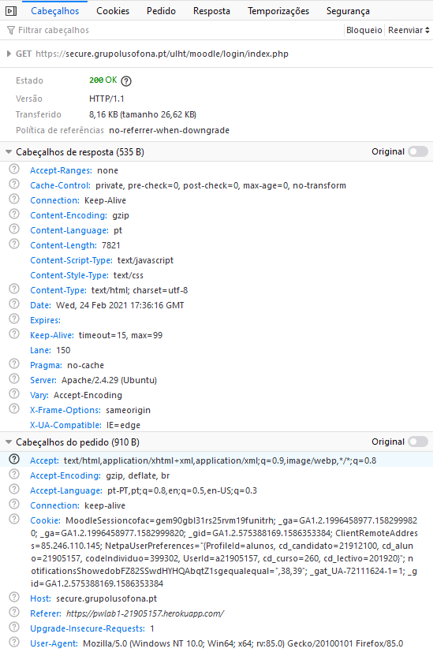
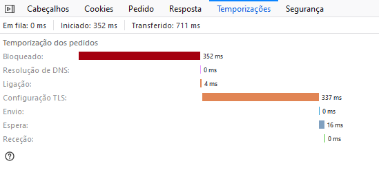

Endereço ip do meu computador e localização
Endereço ip do site heroku
Geotracer
O site https://pwlab1-21905157.herokuapp.com é composto por um documento e uma imagem png.
O documento ocupa 1.06kB e a imagem está gaurdada em cache.
O documento demorou cerca de 48ms a abrir, e a imagem demorou cerca de 42ms.
Após clicar no hyperlink
Foi carregado um ficheiro ao clicar no hyperlink
Tempo de espera e tempo de descarga
Ao clicar no ficheiro observo o seguinte
Preview
Timings
